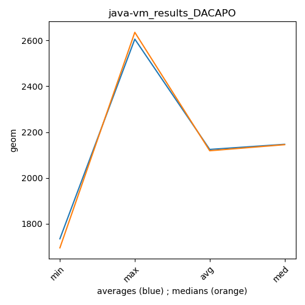

java- DACAPO
Context at bottom
/home/jvanek/git/benchmarks-in-nested-virtualisation-toolchain/final_results/vm_results/vm_results_RADARGUNs3
java-
DACAPO
/home/jvanek/git/benchmarks-in-nested-virtualisation-toolchain/final_results/vm_results/vm_results_RADARGUNs1
java-
DACAPO
/home/jvanek/git/benchmarks-in-nested-virtualisation-toolchain/final_results/vm_results/vm_results_DACAPO
java-
DACAPO
vm_results_DACAPO
final score
Expected number of java- JDKs: 19
1st avgmed_alljdks_metric:
/home/jvanek/git/benchmarks-in-nested-virtualisation-toolchain/final_results/result_processing.py /home/jvanek/git/benchmarks-in-nested-virtualisation-toolchain/final_results/vm_results/vm_results_DACAPO geom False
values: [2172, 2065, 2104, 2057, 2032, 2151, 2128, 2000, 1974, 2102, 2048, 2145, 2055, 2007, 2048, 2034, 2007, 2035, 1993, 2066, 2046, 2064, 2003, 1961, 2085, 2018, 2076, 2031, 2036, 2067, 2015, 2184, 2229, 2167, 2113, 2211, 2151, 2194, 2109, 2081, 2234, 2094, 2270, 2112, 2193, 2138, 2160, 2165, 2190, 2147, 2092, 2109, 2172, 2127, 2162, 2153, 2138, 2133, 2170, 2186, 2136, 2105, 2156, 2147, 2180, 2145, 2157, 2145, 2101, 2181, 2128, 2096, 2129, 2176, 2135, 2121, 2173, 2167, 2122, 2137, 2197]

Expected number of iterations: 5
final number of values: 81 out of 95
Pass rate: 85.3%
values: (1961, 2270, 2114.1111111111113, 2128)

** accuracy from all jdks and runs
more is better
MIN: 1961
MAX: 2270
AVG: 2114.1111111111113
MED: 2128
Relative differences 1:
MIN-MAX: 14.0 %
MIN-AVG: 7.0 %
MIN-MED: 8.0 %
MAX-MIN: -16.0 %
MAX-AVG: -7.0 %
MAX-MED: -7.0 %
AVG-MED: 1.0 %
stored to java-.properties. sort | uniq that!
2nd avgmed_by_jdk_metric:
values: [2086.0, 2071.0, 2060.6, 2034.0, 2029.4, 2026.2, 2045.0, 2180.8, 2151.3333333333335, 2158.2, 2165.5, 2150.8, 2144.6, 2152.6, 2146.6, 2142.4, 2131.4, 2159.2]

values: [2065, 2102, 2048, 2034, 2035, 2018, 2036, 2184, 2151, 2112, 2193, 2160, 2153, 2138, 2147, 2145, 2129, 2167]

values: (2026.2, 2180.8, 2113.090740740741, 2144.6)
values: (2018, 2193, 2112.0555555555557, 2138)

** accuracy from all jdks where runs were avged
more is better
MIN: 2026.2
MAX: 2180.8
AVG: 2113.090740740741
MED: 2144.6
Relative differences 1:
MIN-MAX: 7.0 %
MIN-AVG: 4.0 %
MIN-MED: 6.0 %
MAX-MIN: -8.0 %
MAX-AVG: -3.0 %
MAX-MED: -2.0 %
AVG-MED: 1.0 %
stored to java-.properties. sort | uniq that!
** accuracy from all jdks where runs were medianed
more is better
MIN: 2018
MAX: 2193
AVG: 2112.0555555555557
MED: 2138
Relative differences 1:
MIN-MAX: 8.0 %
MIN-AVG: 4.0 %
MIN-MED: 6.0 %
MAX-MIN: -9.0 %
MAX-AVG: -4.0 %
MAX-MED: -3.0 %
AVG-MED: 1.0 %
stored to java-.properties. sort | uniq that!
/home/jvanek/git/benchmarks-in-nested-virtualisation-toolchain/final_results/vm_results/vm_results_JMH
java-
DACAPO
/home/jvanek/git/benchmarks-in-nested-virtualisation-toolchain/final_results/vm_results/vm_results_J2DBENCH
java-
DACAPO
/home/jvanek/git/benchmarks-in-nested-virtualisation-toolchain/final_results/vm_results/vm_results_SPECJBB
java-
DACAPO
pass rates:
vm_results_DACAPO=85.3%
Context:
- vm_results
- DACAPO